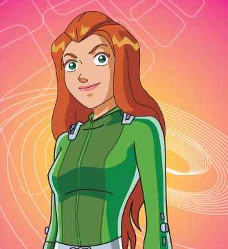
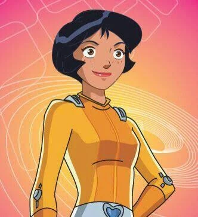

Sam Simpson
Sam Simpson é a mente brilhante por trás de muitas vitórias das Três Espiãs Demais. Inteligente, estratégica e sempre com uma solução na ponta da língua, ela é o cérebro da equipe da WOOHP. Com seus cabelos ruivos, estilo elegante e personalidade racional, Sam equilibra a impulsividade de Clover e a doçura de Alex com maturidade e foco. É excelente em tecnologia, lógica e investigação — praticamente uma gênia disfarçada de adolescente. Mesmo sendo a mais séria do trio, tem um coração enorme e sabe se soltar quando precisa. Sam mostra que inteligência é, sim, superpoder.

Clover Ewing
Clover Ewing é a espiã mais fashionista e extrovertida do trio de Três Espiãs Demais. Com seu estilo inconfundível, cabelo loiro impecável e um guarda-roupa de dar inveja, ela equilibra missões perigosas com sua paixão por compras, celebridades e, claro, garotos. Apesar de parecer fútil à primeira vista, Clover é corajosa, determinada e sabe usar sua astúcia para sair de enrascadas — muitas vezes salvando o dia com um salto alto e uma frase afiada. Ela pode até reclamar das missões que atrapalham seus planos no shopping, mas no fundo, é uma agente leal, uma amiga divertida e uma peça fundamental da equipe da WOOHP.

Alex Casoy
Alex Casoy é a alma leve e otimista das Três Espiãs Demais. Com seu jeitinho doce, energia contagiante e talento natural para esportes, ela é a agente perfeita para qualquer missão que exija agilidade e coragem. Alex é leal, gentil e muitas vezes a mais empática do grupo, sempre pronta para apoiar as amigas ou fazer uma piada no momento certo. Embora às vezes possa parecer um pouco ingênua, ela surpreende com sua bravura e determinação nas horas mais difíceis. De roupas coloridas e sorriso fácil, Alex é a prova de que ser sensível e divertida não impede ninguém de ser uma heroína incrível.